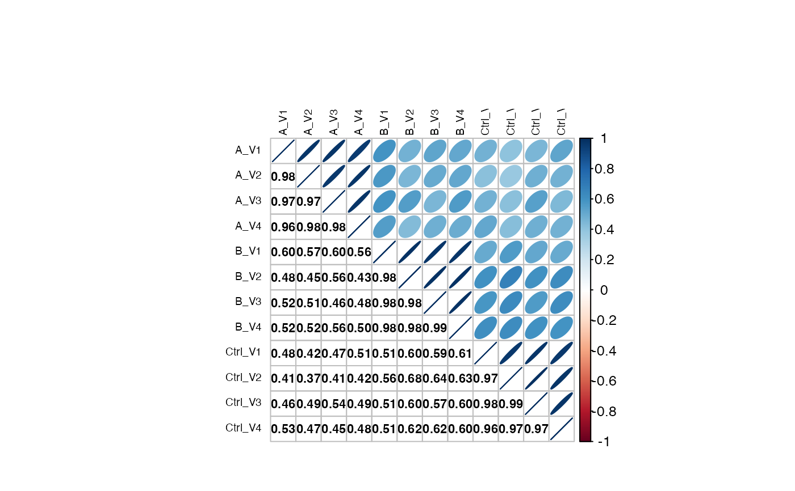

visualize correlation among samples
plot_sample_correlation(pdata, config)
| pdata | data.frame |
|---|---|
| config | AnalysisConfiguration |
Other plotting:
Contrasts_Plotter,
INTERNAL_FUNCTIONS_BY_FAMILY,
medpolishPlydf(),
missigness_histogram(),
missingness_per_condition_cumsum(),
missingness_per_condition(),
plot_NA_heatmap(),
plot_aggregation(),
plot_heatmap_cor(),
plot_heatmap(),
plot_hierarchies_add_quantline(),
plot_hierarchies_boxplot_df(),
plot_hierarchies_line_df(),
plot_hierarchies_line(),
plot_intensity_distribution_violin(),
plot_pca(),
plot_raster()
istar <- prolfqua::data_ionstar$filtered() #> Column added : nr_peptide_Id_IN_protein_Id stopifnot(nrow(istar$data) == 25780) config <- istar$config$clone(deep=TRUE) analysis <- istar$data analysis <- remove_small_intensities(analysis, config) analysis <- transform_work_intensity(analysis, config, log2) #> Column added : log2_peptide.intensity mm <- toWideConfig(analysis, config, as.matrix = TRUE) class(plot_sample_correlation(analysis, config))  #> [1] "matrix" "array"